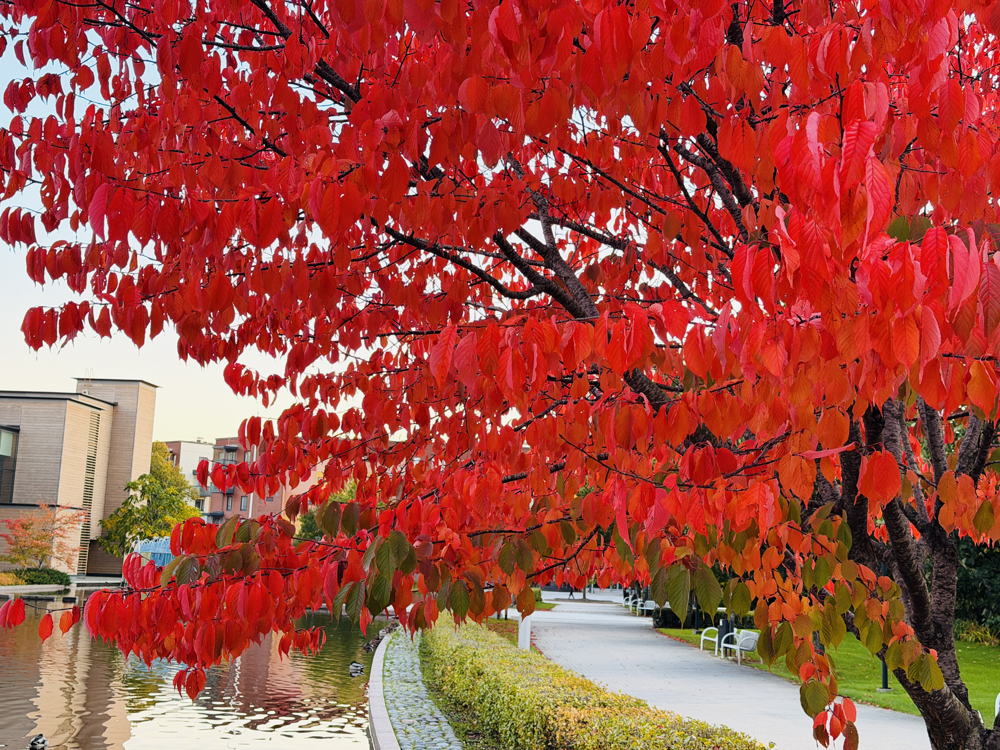
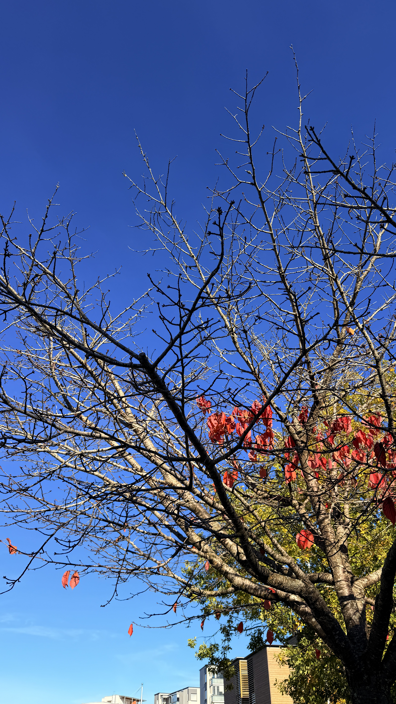
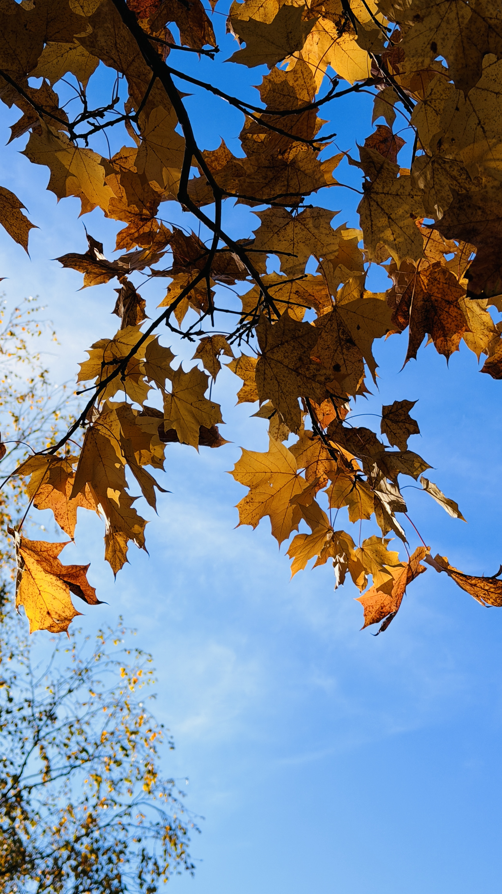
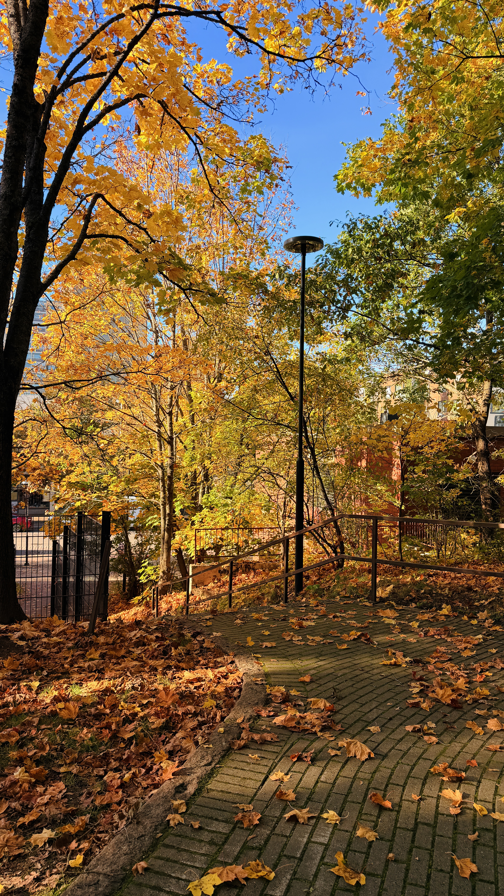
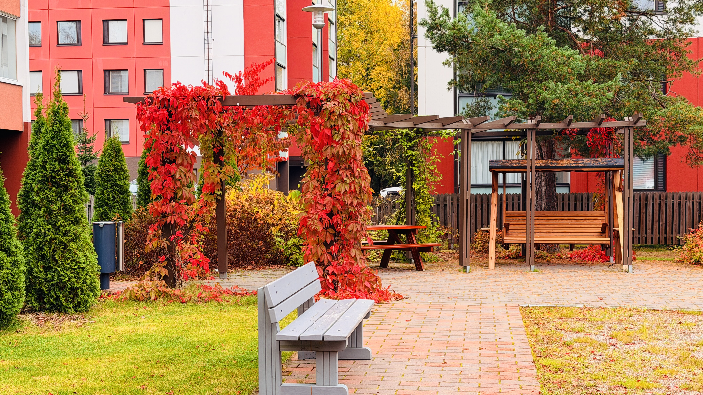

Welcome to Autumn
Autumn is one of my favourite seasons in Finland. The trees change into beautiful shades of red, orange and yellow. I captured these moments while enjoying the peaceful beauty of Finnish nature.
My Autumn Collection





A Quiet Season
Finnish autumn is colourful, peaceful and refreshing. I love seeing the changing colours of the trees and taking photographs of nature around me.